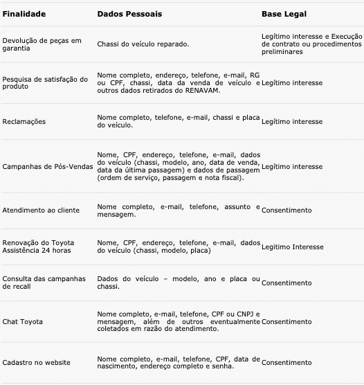
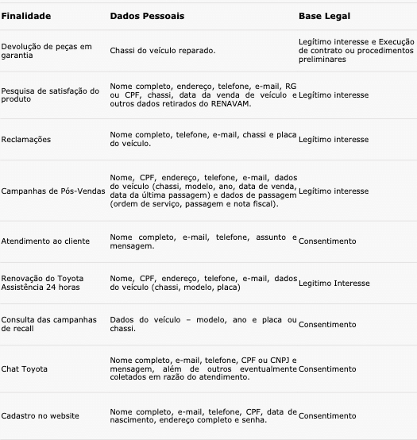

Nós, da TOYOTA DO BRASIL LTDA., pessoa jurídica de direito privado, inscrita no CNPJ sob o n° 59.104.760/0001-91 (a “Toyota”, “Nós”), buscamos a melhor maneira de satisfazer as necessidades de nossos clientes e usuários (“Você”). No mundo todo, somos uma empresa líder no ramo de produção e vendas de veículos e, por isso, em respeito à privacidade e aos dados pessoais dos nossos consumidores, apresentamos a Você o presente documento (“Política ou “Política de Privacidade”).
Quando acessar ou interagir com o nosso website ou utilizar os nossos serviços, podemos guardar algumas informações (“Dados” ou “Dados Pessoais”) sobre Você. Elaboramos esta Política de Privacidade com o intuito de esclarecer quais Dados Pessoais podem ser coletados usados, compartilhados e armazenados por Nós.
A aceitação desta Política será feita quando você utilizar os nossos serviços, acessar ou interagir com o website e, quando solicitado, concordar de forma afirmativa com o uso dos seus Dados Pessoais para cada uma das finalidades por Nós aqui descritas. Dessa forma, Você estará ciente e em total acordo com o modo como utilizaremos as suas informações e os seus Dados Pessoais. Caso não concorde com esta Política, por favor, não continue utilizando nossos serviços e website e tampouco interaja com ele. Pedimos apenas que nos explique o motivo de discordância para que possamos melhorar nossos produtos e serviços. Você pode entrar em contato conosco pelo e-mail lgpd@toyota.com.br.
Com o intuito de facilitar a compreensão da nossa Política, dividimos a Política da seguinte forma:
1. Que tipos de Dados a Toyota coleta?
A quantidade e o tipo de informações coletadas pela Toyota variam conforme o uso que Você faz dos nossos produtos e serviços. Coletaremos diferentes Dados mesmo se Você estiver apenas visitando nossos sites.
Para tornar essas diferenças mais claras, listamos abaixo algumas finalidades para as quais seus Dados podem ser utilizados dependendo do tipo de interação que Você tem conosco bem como a base legal definida na lei geral de proteção de dados que garante a coleta dos dados pessoais com o seu consentimento ou sem (legitimo interesse ou obrigação decorrente de lei):
Se Você é um visitante do site e/ou interagiu com nosso site, seus Dados serão utilizados de acordo com as formas apresentadas nas tabelas abaixo, com suas respectivas bases legais:
Este site e demais canais de comunicação mantidos pela Toyota não coletam intencionalmente informações pessoais de ou sobre qualquer pessoa menor de idade. Se você é menor de idade e deseja nos contatar ou usar neste site qualquer funcionalidade que exija o envio de suas informações pessoais, solicite a seus pais ou responsáveis que façam isso em seu nome.
Se Você é um proprietário dos nossos veículos, seus Dados serão utilizados de acordo com as formas apresentadas nas tabelas abaixo, com suas respectivas bases legais:
Podemos tratar Dados adicionais em situações específicas, mas sempre com uma base legal válida. Além disso, importante mencionar não temos a pretensão de coletar Dados Sensíveis, mas que podemos tratá-los nas hipóteses em que você voluntariamente fornecer. Nesses casos, avaliaremos a real necessidade do uso desses Dados e, caso sejam excessivos, nos comprometemos a eliminá-los imediatamente.
Cookies são pequenos arquivos de texto armazenados em seu navegador ou dispositivo. Os cookies nos permitem reconhecer as suas preferências para, por exemplo, adaptar o site e sua navegação às suas necessidades específicas. Ou seja, algumas informações suas são salvas nesse arquivo de texto e, quando você visita o site novamente mais tarde, o site reconhece seu navegador e pode, por exemplo, manter a sua conta logada.
Os cookies geralmente também têm uma data de expiração. Por exemplo, alguns cookies são excluídos automaticamente quando você fecha o navegador (os chamados cookies de sessão), enquanto outros podem ser armazenados por mais tempo no computador até serem excluídos manualmente (os chamados cookies persistentes).
A Toyota utiliza os seguintes tipos de cookies em seus Produtos:
(i) cookies estritamente necessários, para que nosso site funcione corretamente, autenticando logins, por exemplo. Portanto, não é possível recusar estes cookies se Você quiser visitar os nossos sites;
(ii) cookies de análise, para melhorar o conteúdo dos nossos sites, fornecendo informações sobre como os sites estão sendo usados, para melhorar a sua experiência como usuário. Esses cookies realizam a coleta automática de determinados Dados Pessoais para identificar, por exemplo, quantas vezes determinada página foi visitada; e
(iii) cookies de marketing, para que possamos disponibilizar as melhoras ofertas de Produtos e Serviços ao usuário, de acordo com seus interesses.
O uso de cookies de análise e de marketing está sujeito ao seu consentimento prévio por meio de nossos Avisos de Cookies. Assim, caso Você deseje recusar a instalação desses cookies no seu dispositivo e/ou optar pela remoção de cookies que Você deu o consentimento anteriormente, acesse a qualquer momento nosso Aviso de Cookies e altere seu consentimento.
Importante esclarecer que a Toyota não se responsabiliza pelo uso de cookies por terceiros. Fique atento, pois os cookies colocados por terceiros podem eventualmente continuar a monitorar as suas atividades online mesmo depois de ter saído do nosso site, sendo recomendável que Você limpe seu histórico de navegação regularmente.
Os nossos colaboradores, concessionárias autorizadas e fornecedores, como parceiros de publicidade e prestadores de serviços, com os quais trabalhamos, também poderão ter acesso aos Dados Pessoais como parte normal da condução de negócios e da oferta de produtos e serviços aos nossos clientes e obedecem a esta Política de Privacidade. Nestes casos, garantiremos que os seus Dados Pessoais sejam tratados apenas para propósitos legítimos, específicos, explícitos e informados a Você, sem possibilidade de Tratamento posterior de forma incompatível com a finalidade informada.
Caso queira obter informações mais detalhadas sobre os processos comentados acima, sinta-se livre para entrar em contato conosco por meio de nossos canais E-mail: lgpd@toyota.com.br. Nosso time se empenhará para responder a sua solicitação, desde que esta não resvale em alguma legislação aplicável e/ou nos segredos de negócio e na propriedade intelectual da Toyota.
A Toyota poderá operar em conjunto de outras empresas em diversas atividades, inclusive para hospedagem de dados, analytics e inteligência de mercado. Desta forma, nos reservamos o direito de compartilhar suas informações, incluindo Dados Pessoais, tão somente com as empresas abaixo indicadas. Adotaremos, sempre que for possível, mecanismos de anonimização desses dados, visando preservar ao máximo a sua privacidade.
Nossos Parceiros: Temos uma série de fornecedores que precisamos contratar para operar o website e oferecer os nossos serviços, e alguns deles podem tratar em nosso nome os Dados Pessoais que coletamos. Por exemplo, usamos serviços de hospedagem de dados para armazenar a nossa base de dados e contratamos call centers para melhor atender as suas solicitações. Nós nos esforçamos para proteger a privacidade de seus Dados Pessoais, mas infelizmente não podemos garantir o correto manuseio dos Dados Pessoais por terceiros, que utilizam, divulgam e protegem os Dados Pessoais de acordo com suas respectivas Políticas de Privacidade.
Corretoras e Seguradoras: Caso Você tenha interesse em contratar um seguro, podemos vir a compartilhar seus Dados Pessoais com corretoras e seguradoras para a efetivação do cálculo de seguro e apólice, financiamento ou, ainda, para a tratativa de pendências e problemas. Nesse caso, o compartilhamento é necessário para permitir que o serviço contratado chegue a Você de maneira satisfatória.
Empresas de Marketing: Compartilhamos Dados com empresas de marketing para fins de análise comportamental e para o envio de comunicações. Todos os Dados Pessoais compartilhados têm uma base legal adequada que justifica esse tipo de tratamento, que pode ser o seu consentimento ou um interesse legítimo da Toyota. De toda forma, durante esse processo, sempre consideraremos sua privacidade e, quando aplicável, seu direito de opor-se ao tratamento desses dados.
Inteligência de mercado: Algumas informações obtidas pelo atendimento ao cliente, como, por exemplo, resultados de pesquisas de satisfação, podem ser compartilhadas com empresas especializadas para que possamos otimizar e melhorar os nossos processos. As informações compartilhadas são somente aquelas necessárias para que seja efetuada a análise. Sempre que possível, realizaremos a anonimização dos Dados Pessoais que poderiam vir a identificar o nosso cliente.
Analytics: Os dados armazenados por Nós podem vir a ser utilizados para fins de estatísticas (analytics), com a finalidade de a Toyota compreender quem são as pessoas que visitam o nosso website e que são clientes dos nossos Serviços. Estes Dados são pseudonimizados e têm por fim somente compreender melhor como é o acesso dos usuários ao website, a fim de melhorar a prestação de serviços e direcionar produtos mais voltados aos seus interesses.
Para resguardar e proteger direitos da Toyota: Reservamo-nos o direito de acessar, ler, preservar e divulgar quaisquer Dados que acreditamos serem necessários para cumprir uma obrigação legal ou uma ordem judicial; fazer cumprir esta Política de Privacidade, os Termos de Uso e outros acordos; ou proteger os direitos, propriedade ou segurança da Toyota, nossos funcionários, usuários ou outros.
Empresas afiliadas da Toyota: Podemos transferir os Dados entre as empresas do Grupo Toyota para aprimorar nossos produtos e serviços. Todas as nossas empresas estão sujeitas a obrigações contratuais nas quais se comprometem a tratar seus Dados Pessoais com o mesmo nível de segurança e de acordo com as legislações aplicáveis.
A Toyota tem sua sede no Brasil e os Dados que coletamos são regidos pela lei brasileira. Os Dados que coletamos estão hospedados em servidores da Google e da Microsoft.
Além disso, com a finalidade de cumprimento da legislação estrangeira (Lei Sarbanes-Oxley) e de avaliação de riscos considerando o perfil dos clientes da Toyota e a elaboração de score de crédito, podemos enviar os Dados Pessoais a outros países, como no caso da Toyota Motor Credit Corporation (TMCC) e Toyota Motor North America (TMNA), sediadas nos Estados Unidos e da Toyota Financial Services Corporation (TFSC), localizada no Japão.
Ao usar os Serviços da Toyota do ou fornecer Dados Pessoais para nós, Você concorda com o tratamento e a transferência internacional de tais dados para os Estados Unidos e para o Japão. Estes dados poderão estar sujeitos à legislação local e às regras pertinentes.
Você sempre poderá optar por não divulgar seus Dados Pessoais para Nós, mas tenha em mente que esses Dados podem ser necessários para usufruir alguns de nossos recursos e Serviços. Independentemente disso, Você sempre possuirá direitos relativos à privacidade e à proteção dos seus Dados Pessoais, e além de nos preocuparmos com a segurança desses Dados, também nos preocupamos que Você tenha acesso e conhecimento de todos os seus direitos relativos ao tratamento de seus Dados Pessoais.
Nesse sentido, expomos abaixo uma breve explicação e exemplos sobre alguns desses direitos
Requisição de acesso aos seus Dados Pessoais.
Este direito permite que Você possa requisitar e receber uma cópia dos seus Dados Pessoais que Nós possuímos sobre Você.
Requisição de retificação dos seus Dados Pessoais.
Este direito permite que Você, a qualquer momento, solicite a correção e/ou retificação dos seus Dados Pessoais, caso Você identifique que alguns deles estão incorretos. Contudo, para ser efetivada essa correção, possivelmente, precisaremos checar a validade dos Dados que Você nos fornece.
Requisição de exclusão ou cancelamento dos seus Dados Pessoais.
Este direito permite que Você solicite a exclusão dos seus Dados Pessoais da nossa base de dados. Todos os Dados coletados serão excluídos de nossos servidores quando Você assim requisitar ou quando estes não forem mais necessários ou relevantes para lhe oferecermos os nossos Serviços, salvo se houver qualquer outra razão para a sua manutenção, como eventual obrigação legal de retenção de Dados ou necessidade de preservação destes para resguardo de direitos da Toyota.
Direito de objeção ao tratamento de Dados Pessoais.
Você também tem o direito de contestar onde e em que contexto estamos tratando seus Dados Pessoais para diferentes finalidades. Em determinadas situações, podemos demonstrar que temos motivos legítimos para tratar seus Dados, os quais se sobrepõem aos seus direitos, caso, por exemplo, sejam estritamente essenciais para a funcionalidade do website.
Solicitar a portabilidade.
Forneceremos a Você, ou a terceiros que Você escolher, seus Dados Pessoais em formato estruturado e interoperável.
Direito de retirar o consentimento a qualquer momento.
Você tem o direito de retirar o seu consentimento, no entanto, isso não afetará a legalidade de qualquer processamento realizado antes de Você retirar o seu consentimento. Se Você retirar o seu consentimento, talvez não possamos fornecer determinados Produtos. E se for este o caso, iremos avisá-lo quando isso ocorrer.
Direito a revisão de decisões automatizadas.
Você também tem o direito de solicitar a revisão de decisões tomadas unicamente com base em tratamento automatizado de seus Dados Pessoais que afetem seus interesses.
Direito ao esquecimento:
antes de solicitá-lo, verifique se os seus dados não se enquadram nas seguintes hipóteses: (i) necessidade de armazenamento por período exigido em lei; (ii) no caso dos dados de condução do veículo e de localização, eles poderão ser conservados até o final do período do serviço do carro conectado, podendo ser legalmente contestada a prestação deste serviço ou pagamento, ou ainda pelos períodos legalmente definidos para fins de investigação e ações judiciais de natureza penal; e (iii) pagamentos e faturas, sendo possível a deleção após o término do contrato. Isso porque, durante o período, faz-se necessário manter os dados para o cumprimento das obrigações legais pela Toyota, sobretudo de natureza fiscal.
Talvez seja necessário solicitar informações específicas suas para nos ajudar a confirmar sua identidade e garantir seu direito de acessar seus Dados Pessoais (ou de exercer seus outros direitos). Esta é uma medida de segurança para garantir que os Dados Pessoais não sejam divulgados a qualquer pessoa que não tenha direito de recebê-los. Podemos também contatá-lo para obter mais informações em relação à sua solicitação, a fim de acelerar nossa resposta.
Caso Você tenha alguma dúvida sobre essas questões e sobre como Você pode exercer esses direitos, entre em contato conosco: E-mail: lgpd@toyota.com.br
Nós manteremos seus Dados Pessoais, inclusive seus dados de IP (Internet Protocol), bem como data e hora de acesso, pelo período mínimo de 6 (seis) meses, em conformidade com a legislação vigente. Tais dados serão armazenados sob sigilo, em ambiente controlado e de segurança e serão fornecidos apenas em caso de ordem judicial. Ainda que Você venha a excluir o seu cadastro no Site, tais dados permanecerão armazenados pelo período mínimo exigido pela lei ou somente pelo tempo que for necessário para cumprir com as finalidades para as quais os coletamos, inclusive para fins de cumprimento de quaisquer obrigações legais (como do Marco Civil da Internet de armazenar registros de acesso por 6 meses), contratuais, de prestação de contas ou requisição de autoridades competentes campanhas de recall, por exemplo.
Para determinar o período de retenção adequado para os Dados Pessoais, consideramos a quantidade, a natureza e a sensibilidade de tais Dados, o risco potencial de danos decorrentes do uso não autorizado ou da divulgação de seus Dados Pessoais, a finalidade do processamento e se podemos alcançar tais propósitos por outros meios, e os requisitos legais aplicáveis.
A Toyota toma providências técnicas, administrativas e organizacionais para proteger seus Dados Pessoais contra perda, uso não autorizado ou outros abusos. Os Dados são armazenados em um ambiente operacional seguro que não é acessível ao público.
Com a finalidade de garantir a segurança de seus Dados Pessoais em nossos Serviços, adotamos as melhores práticas de segurança da informação disponíveis, incluindo todos os tipos de medidas administrativas, técnicas e físicas de cunho preventivo em relação à segurança e privacidade durante a execução de suas atividades envolvendo dados pessoais, desde o treinamento e conscientização dos colaboradores, até o uso de tecnologias de criptografia e firewall avançadas.
Nós nos esforçamos para proteger a privacidade de sua conta e de outros Dados Pessoais que mantemos seus em nossos registros, mas infelizmente não podemos garantir total segurança. Entrada ou uso não autorizado de conta, falha de hardware ou software e outros fatores podem comprometer a segurança dos seus Dados Pessoais a qualquer momento, por isso, nos ajude a manter um ambiente seguro para todos. Além de adotar boas práticas de segurança em relação à sua conta e aos seus dados, caso Você identifique ou tome conhecimento de algo que comprometa a segurança dos seus dados, por favor entre em contato conosco.
Se Você acredita que seus Dados Pessoais foram usados de maneira incompatível com esta Política de Privacidade ou com as suas escolhas enquanto titular destes Dados Pessoais, ou, ainda, se Você tiver outras dúvidas, comentários ou sugestões relacionados a esta Política, Você pode entrar em contato com nosso time através do E-mail: lgpd@toyota.com.br
Como estamos sempre buscando melhorar nossos Serviços, essa Política de Privacidade pode passar por atualizações. Desta forma, recomendamos visitar periodicamente esta página para que Você tenha conhecimento sobre as modificações. Caso sejam feitas alterações relevantes que necessitem de um novo consentimento seu, iremos publicar essa atualização e solicitar um novo consentimento para Você.
Última modificação: 29 de outubro de 2021.
Todos os campos com (*) são obrigatórios.
Identifique sua relação com a Toyota